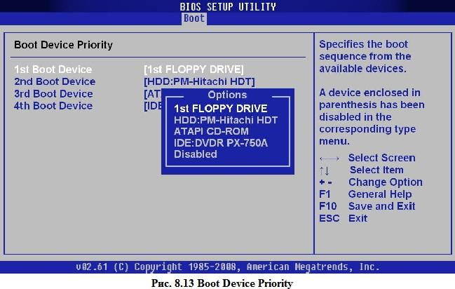

Теоретична частина
BIOS (Basic Input/Output System − базова система введення/виведення) − це обов’язкове програмне забезпечення комп’ютера, яке доступне без звертання до пристроїв зовнішньої пам’яті. Це набір програм перевірки й обслуговування апаратних засобів ПК. BIOS отримує управління при вмиканні або перезавантаженні ПК, тестує системну плату й основні блоки комп’ютера − відеоадаптер, клавіатуру, контролери дисків і портів введення/виведення, налаштовує чипсет і передає управління завантажувачу операційної системи.
BIOS складається з таких частин:
- POST (Power On Self Test) − програма, відповідальна за тестування апаратних засобів комп’ютера при вмиканні живлення.
- System Setup − програма налаштування системи.
- Набір програм для управління апаратною частиною ПК.
BIOS узагалі унікальний для кожної моделі материнської плати комп’ютера, тобто він розробляється з урахуванням особливостей функціонування тієї комбінації обладнання, що властива саме для цієї моделі. BIOS для сучасних системних плат розробляється найчастіше однією з фірм, що спеціалізуються на цьому:
- Award Software (яка поглинула Phoenix Technology − одного з найвідоміших у минулому виробників BIOS);
- American Megatrends Inc. (AMI), InsydeBIOS.
Де зберігається BIOS
В усіх сучасних платах BIOS зберігається в електрично- програмованих ПЗП (постійний запам’ятовуючий пристрій) (Flash ROM), що допускають перепрошивку BIOS засобами самої плати за допомогою спеціальної програми. Це дозволяє підвищувати технічні можливості материнської плати. Однак, крім явних плюсів, у цій технології є також мінуси. Наприклад, сьогодні існує група вірусів, що, користуючись можливістю змінювати вміст BIOS, стирають або псують його й у такий спосіб роблять комп’ютер непрацездатним через неправильний або відсутній BIOS комп’ютер відмовляється завантажуватися. Виправити таку ситуацію можна тільки в сервісному центрі, де в спеціальному пристрої- програматорі − на мікросхему Rash ROM буде записана вихідна версія BIOS.
Свою конфігурацію BIOS зберігає в так званій CMOS RAM. CMOS RAM називається так тому, що вона виконана на основі CMOS-структурі (CMOS − Complementary Metal Oxide Semiconductor), що відрізняються малим енергоспоживанням. Однак CMOS-пам’ять енергозалежна, оскільки постійно підживлюється від батарейки, розташованої на системній платі. У ноутбуках та нетбуках живлення CMOS-пам’яті відбувається від акумуляторної батареї.
У той час, коли комп’ютер увімкнутий, CMOS RAM живиться від блока живлення комп’ютера.
У CMOS RAM зберігається інформація про поточні показники часу, конфігурацію комп’ютера: кількості пам’яті, типах накопичувачів тощо. У випадку ушкодження мікросхеми CMOS RAM (або розрядці батареї чи акумулятора) BIOS має можливість скористатися конфігурацією за замовчуванням.
Чи потрібно змінювати BIOS
Загальний принцип, якого слід дотримуватися: якщо комп’ютер працює стабільно і ніяких дефектів у його роботі, пов’язаних із BIOS, не виявлено (при цьому потрібно переконатися, що ці недоліки викликані саме BIOS, а не іншими причинами, наприклад неправильними драйверами пристроїв, неправильною конфігурацією операційної системи), при цьому відновлювати BIOS не доцільно.
Однак існують ситуації, коли відновлення BIOS необхідне. Зазвичай це вихід нового процесору, підтримка якого не була закладена в поточній версії BIOS. Перш ніж встановлювати нову версію, необхідно вийти на сайт технічної підтримки фірми- виробника системної плати, прочитати специфікації нової версії BIOS і при необхідності скачати їх, переконавшись, що ця версія виправляє саме ті деф
Як BIOS завантажує комп’ютер
Після вмикання комп’ютера на процесор подається напруга, і він “прокидається”. Першими прочитаними процесором командами є інструкції з чіпа BIOS (про це піклуються мікросхеми системної плати). Першим запускається POST − програма самотестування. POST виконує такі кроки:
- ініціалізує системні ресурси й регістри чипсетів, систему управління електроживленням;
- визначає обсяг і тестує оперативну пам’ять (RAM);
- ініціалізує відеоадаптер;
- вмикає клавіатуру;
- тестує послідовні й паралельні порти;
- ініціалізує дисководи й контролери жорстких дисків;
- відображає підсумкову системну інформацію.
У процесі виконання цих дій BIOS порівнює дані поточної системної конфігурації з інформацією, що зберігається в CMOS, і при необхідності відновлює її. Якщо при виконанні якого-небудь кроку виникли збої, BIOS інформує про це повідомленнями на екрані монітора, а якщо це неможливо (наприклад, ще не був ініціалізований відеоадаптер), подає звуковий сигнал через системний динамік. Кількість та характер звукових сигналів відповідає кодам помилки.
Звукові сигнали POST різних фірм-виробників BIOS
На сьогодні не створені жодні стандарти, що регламентують формат звукових повідомлень. Проте слід зазначити, що більшість виробників використали короткий сигнал, щоб сповістити про успішне закінчення процедур POST.
Звукові повідомлення AwardBIOS
У AwardBIOS, який від 1998 року теж належить компанії Phoenix Technologies Ltd., система звукових повідомлень, що застосовується під час виконання його POST, доволі проста. Звукова індикація виконується лише у двох випадках:
- негаразди з оперативною пам’яттю: послідовність коротких сигналів;
- проблеми з відеокартою: після довгого сигналу подається два коротких.
Звукові повідомлення AMIBIOS
Під час виконання POST, розроблений компанією American Megatrends Inc. надсилає до системного динаміка послідовність звукових сигналів про наступні ситуації з комп’ютерним обладнанням:
- 1 сигнал − проблеми із схемами регенерації пам’яті;
- 3 сигнали − помилка оперативної пам’яті;
- 6 сигналів − негаразди з контролером клавіатури;
- 7 сигналів − помилка центрального процесору;
- 8 сигналів − проблеми з відеокартою.
Звукові повідомлення InsydeBIOS
де К − короткий звук, Д − довгий звук.
На сьогодні відомо дев’ять звукових повідомлень:
- ККК−ККД (помилки в роботі DMA-регістрів)
- ККК−КДК (помилки в роботі схем регенерації пам’яті)
- ККК−КДД (хибна контрольна сума BIOS)
- ККК−ДКК (помилки в CMOS-пам’яті)
- ККК−ДКД (помилки в роботі DMA-контролера)
- ККК−ДДК (помилки в роботі PIC-контролера)
- ККК−ДДД (помилки в роботі контролера клавіатури)
- ККД−ККК (помилки в роботі VGA-адаптера)
- ККД−ККД (помилки в оперативній пам’яті)
Після того як усі POST-завдання завершені, починає шукати програму-завантажник. Сучасні версії BIOS дозволяють завантажувати операційну систему з різних носіїв інформації (HDD, CD/DVD, USB-пристроїв).
Програма-завантажник, як правило, розташовується в першому секторі диска, на якому розміщена операційна система. Порядок перебору дисків при пошуку завантажника задається в конфігурації BIOS. Якщо завантажник знайдений, він переноситься в пам’ять і йому передається управління. Він у свою чергу знаходить і копіює в пам’ять власне програму завантаження операційної системи (operation system loader), що завантажує, ініціалізує і конфігурує операційну систему й драйвери пристроїв.
Налаштування BIOS (System Setup)
Після виконання послідовності тестів POST і перед початком пошуку програми-завантажника, BIOS надає користувачеві можливість увійти в програму конфігурації системи − System Setup. Про це BIOS повідомляє написом на екрані (зазвичай “Натисніть клавішу Del для входу в Setup”). Натиснувши відповідну клавішу (найчастіше − Delete), ви потрапляєте в меню програми конфігурації. З нього можна настроїти масу різних параметрів. Розглянемо деякі з них, наприкладі AMIBIOS(рис. 8.1).

Розділ MAIN
У розділі MAIN (рис. 8.1) надається можливість самостійного налаштування часу та дати системи, а також налаштувати підключення жорстких дисків та інших накопичувачів.
Як правило, BIOS автоматично визначає всі підключені пристрої, їх не потрібно включати вручну, але можна змінити деякі параметри при їх автоматичному включенні. Для цього слід вибрати потрібний вам жорсткий диск або інший накопичувач, і натиснути “Enter” на клавіатурі. Після цього в меню налаштувань обраного накопичувача, ми бачимо всю інформацію про підключений до першого каналу жорсткий диск. Якщо до каналу не підключений жоден пристрій, то ми бачимо напис “Not Detected” (рис. 8.2).
Type – даний параметр надає змогу налаштувань жорстокого диску, слід змінити з Auto на User.
LBA/Large Mode – даний параметр відповідає за підтримку накопичувачів, об’єм яких більше 504 Мбайт. Таким чином тут бажано вибрати значення AUTO.
Block (Multi-Sector Transfer) – за допомогою цього параметру можна відключити передачу даних декількох секторів одночасно по 512 байт, тобто, відключаючи даний параметр, різко знизиться швидкість роботи жорсткого диска, адже за раз передаватиметься тільки 1 сектор рівний 512 байт. Для швидкої роботи краще поставити режим AUTO.
PIO Mode – за допомогою даного параметра, можна змусити жорсткий диск працювати в застарілому режимі обміну даними. Автоматично сучасні жорсткі диски працюють в найшвидшому режимі, тому, тут також краще виставити значення AUTO.
DMA Mode – прямий доступ до пам’яті. Для досягнення вищої швидкості зчитування/запису, слід залишити значення AUTO.
SMART Monitoring – за допомогою цієї технології можна відстежувати стан жорсткого диска. Іншими словами – це технологія самоспостереження, звітності і аналізу. Також краще виставити значення AUTO.
32 Bit DataTransfer – якщо встановлений параметр “Enabled” (включений), то данні по шині PCI передаватимуться в 32-бітовому режимі. Якщо встановлений параметр “Disabled” (відключений), то данні будуть передаватися в 16-бітовому режимі.
System Information
У розділі MAIN, також можна отримати деяку інформацію про систему. Для цього вибрати пункт меню System Information (рис. 8.3). У вікні, що відкрилося, ви побачите версію BIOS і дату його виробництва, також тут є інформація про процесор і системну пам’ять.
SATA Configuration
Вибравши в розділі MAIN пункт SATA Configuration (рис. 8.4), відповідає за налаштування дискової підсистеми. SATA Configuration має три параметри:
- Disabled – відключає SATA-контролер;
- Enhanced – стандартний режим роботи;
- Compatible – дискова підсистема працюватиме в режимі сумісності із застарілими операційними системами (Windows 98, 95, Me).
Configure SATA as – має два режими:
- IDE – режим, який дозволяє бачити всі підключені диски у вигляді IDE-пристроїв;
- AHCI – режим, який дозволяє використовувати сучасну технологію Plug-in-Play.
Hard Disk Write Protect і SATA Detect Time Out. Основним завданням даних параметрів є захист дисків від запису, тобто краще залишити параметр Hard Disk Write Protect в режимі Disabled. Змінюючи параметр SATA Detect Time Out, можна змінити час, який буде витрачено комп’ютером на пошук дискової підсистеми.
Розділ Advanced
В даному розділі пункт JumperFree Configuration, відкриває доступ до групи параметрів Configure System Perfomance Settings (рис. 8.6).
Ai Overclock Tuner – має два режими роботи:
- AUTO – процесор працює в штатному режимі;
- Manual – ручне налаштування режиму роботи процесору.
DRAM Frequency – цей параметр дозволяє задати частоту шини пам’яті незалежно від частоти шини процесора.
Елемент меню CPU Configuration (рис. 8.7) надає можливість змінювати всі налаштування пов’язані з центральним процесором, також можна спостерігати за його роботою і дізнаватися всі відомості про центральний процесор.
Елемент меню Onboard Devices Configuration (рис. 8.8) це набір параметрів які впливають на роботу контролерів і портів материнської плати.
Наприклад, змінюючи значення Onboard 1394 Controller, ми можемо відключити або навпаки включити його.
Елемент меню USB Configuration (рис. 8.9) відповідає за роботу послідовного інтерфейсу USB.
Розділ POWER (параметри живлення)
У розділі Power можна налаштувати функції енергозбереження і включення і відключення вашого комп’ютера.
Елемент меню ACPI – Advanced Configuration and Power Interface – цей інтерфейс розширеного управління живленням.
Елемент меню Hardware Monitor (рис. 8.11), надає інформацію про температуру центрального процесора і про швидкість обертання вентиляторів, а також можна отримати інформацію з решти всіх датчиків комп’ютера, і внести зміни в деякі параметри блоку живлення.
Розділ Boot
Розділ Boot (рис. 8.12) – у даному розділі можна провести зміни в параметрах завантаження.
Елемент меню Boot Device Priority (рис. 8.13) надає можливість встановити пріоритетність пристроїв для завантаження операційної системи, тобто який із пристроїв буде опитуватися першим, другим і т.д.
Для того, щоб встановити операційну систему потрібно першим вказати той пристрій з якого буде відбуватися інсталяція ОС.

Елемент меню Hard Disk Drivers (рис 8.14) даний параметр дозволяє змінити послідовність пристроїв, з якого спочатку завантажуватиметься операційна система. Даний параметр слід використовувати, коли в комп’ютері встановлено декілька жорстких дисків з різними ОС.
Елемент меню Boot Setting Configuration (рис. 8.15) містить налаштування, що впливають на процес завантаження операційної системи, ініціалізацію клавіатури і миші, обробку помилок і так далі.
Quick Boot – параметр, активувавши який, кожного разу при включенні комп’ютера, BIOS проводитиме тест оперативної пам’яті, що призведе до швидшого завантаження операційної системи.
Full Screen Logo – параметр, який відповідає за вивід повноекраного графічного зображення логотипу материнської плати.
Add On ROM Display Mode – параметр, який визначає порядок появи на екрані інформації про пристрої, які підключені через плати розширення і мають свій власний BIOS.
Bootup Num-Lock – параметр, що визначає, в якому стані при включенні ПК повинна бути клавіша “Num Lock”.
Wait For ’F1’ If Error – включення цього параметру, змусить користувача натиснути клавішу “F1”, якщо на початковій стадії завантаження ПК виявиться помилка.
Hit ’DEL’ Message Display – параметр, який керує появою на екрані напису, яку клавішу слід натиснути, щоб відкрити вікно налаштувань BIOS.
Елемент меню Security Setting (рис. 8.16) – налаштування захисту.
Supervisor Password – даний параметр дозволяє змінити, видалити, або задати новий пароль адміністратора для доступу в BIOS.
User Password – даний параметр дозволяє змінити, встановити або видалити пароль користувача.
Розділ Tools
Елемент меню ASUS EZ Flash – за допомогою даного елементу, у користувача є можливість оновлювати BIOS з таких накопичувачів як: дискета, USB-пристрою або компакт-диск.
Розділ Exit
Exit & Save Changes (F10) – використовується, щоб вийти з BIOS із збереженням всіх внесених змін.
Exit & Discard Changes – вихід з відміною всіх внесених змін.
Discard Changes – відміна всіх внесених змін.
Load Setup Defaults – встановлення параметрів за замовчанням.
Контрольні запитання:
- Які параметри включені в елемент PCI PnP?
- Які основні правила BIOSy?
- В яких випадках слід скористатися елементом CPU Configuration?
- На що впливає зміна параметрів DRAM Timing Control?
- Чим відрізняються елементи Supervisor Password і User Password?